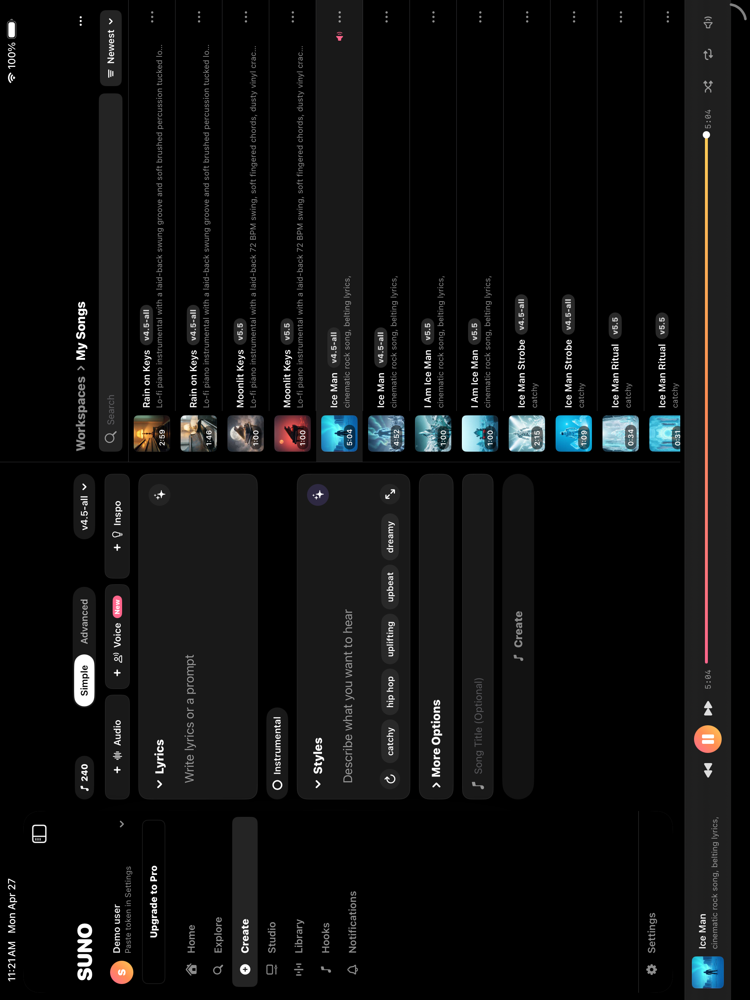

An iPad-native rebuild of suno.com. Three columns, real API, streaming playback. Built in one hour with Claude Code.

studio-api-prod.suno.com.Suno’s iOS app on iPad is the iPhone app at 2x. This isn’t. It is a SwiftUI iPad application modeled after the desktop webapp at suno.com/create: sidebar, center workspace, song list, persistent transport.
NavigationSplitView. Sidebar mirrors the webapp left rail. Center switches by selection. Right pane is always the Workspaces song list.studio-api-prod.suno.com. Real model identifiers (chirp-fenix, chirp-crow, chirp-bluejay, chirp-auk, chirp-auk-turbo, chirp-v4).Apple device ownership, 2026:
The iPad audience is bigger than the Mac market. Shipping a phone-shaped app there leaves value on the table.
Suno populates audio_url the moment a clip enters streaming status, roughly one second after submit. The MP3 is served from S3 with Accept-Ranges: bytes. The player attaches an AVPlayer against that URL during polling and starts playback as bytes arrive.
Time from Create tap to first audible note: about three to five seconds.
POST /api/generate/v2/ submit GET /api/feed/?ids=<id1>,<id2>,... poll POST /api/feed/v3 library POST /api/unified/homepage/explore discover GET /api/billing/info/ credits, model gating
Source is private. Available on request.
Eric Spencer. Computer Science & Information Systems, Loyola University Chicago, May 2026. Based in Chicago. Builds AI tools, native apps, and small useful things.
Recent work: a formal-methods interactive microwave in TLA+ on a JVM, a VS Code extension for pasting a small codebase into a web LLM when Cursor credits run out, a terminal ChatGPT wrapper, and the iPad concept above.
Recording as Famous Moji on the major streaming services and on suno.com as @famousmoji.